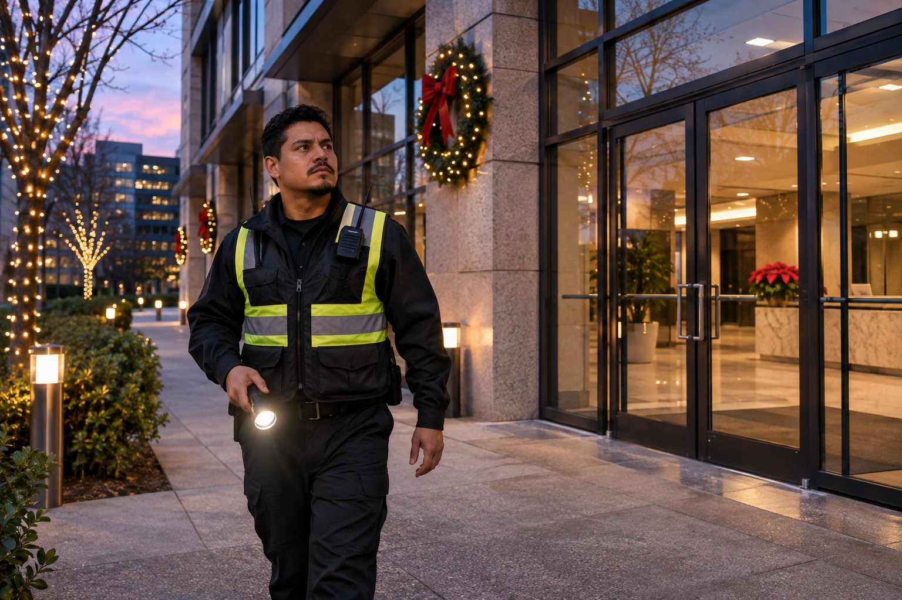

Security Guards for Vacant Commercial Buildings During Holiday Closures

Vacant does not mean risk free
An office building may be empty for a long weekend while equipment, records and tenant belongings remain inside. Regular staff are not there to notice damaged doors or unexpected visitors. A holiday security plan should identify the points of entry, the condition of locks and lighting, who responds to alarms, and how property managers will learn about incidents before normal operations resume.
Decide what on site coverage needs to accomplish
Different properties need different arrangements. A small building may prioritize regular exterior checks and documented site observations. A larger multi tenant property may need a staffed lobby, parking structure patrols or coverage around loading areas. Define whether guards are expected to monitor access, observe and report, conduct scheduled patrols or coordinate with a designated manager. Document the limitations of the assignment so no one assumes the guard can cover areas outside the agreed scope.
Prepare the response list before the building closes
Confirm working contact information for the owner, manager, maintenance responder and any alarm company. Decide who can authorize repairs or access after hours. Record existing damage and any construction or vendor activity scheduled during closure. Keep emergency exits accessible and avoid creating unsafe conditions with improvised locks. Ask how incident reports will be delivered and who reviews them. These ordinary details become more important when the building is not occupied.
Make holiday coverage part of a repeatable plan
An effective proposal specifies the dates, shifts, site access instructions, reporting procedure and main areas of concern. It also identifies whether the property needs recurring service or a defined temporary assignment. Paradigm Security Services can discuss on site guard coverage for commercial properties in its service area. Request a Quote before the holiday closure or vacancy period begins so access and responsibilities can be agreed in advance.
Unarmed Security · Request a Quote